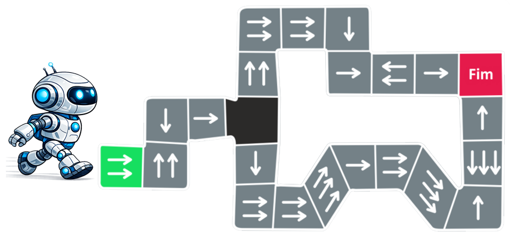

Exercício 5
O Percurso do Robô
O Luís está a testar um pequeno robô num laboratório de programação. O robô começa na primeira casa, assinalada a verde. Em cada casa, o robô segue sempre a mesma regra:
- conta o número de setas desenhadas nessa casa.
- avança esse número de casas na direção indicada pelas setas.
- repete o processo a partir da nova casa onde parar.
Uma das casas do percurso está vazia. O Luís precisa de escolher que setas deve desenhar nessa casa para que o robô consiga chegar à casa final.

Pergunta
O que é que a Inês precisa de desenhar na casa vazia para o robô conseguir chegar ao fim?